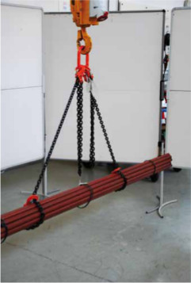

| 1. | Vorbereitungen treffen:
|
| 2. | Dem Kranführer das Gewicht der Last mitteilen. |
| 3. | Kranhaken senkrecht über Schwerpunkt der Last fahren. |
| 4. | Anschlagen der Last; nicht benutzte Stränge hochhängen (Bild 3-1); Anschlagmittel, wenn nötig, von außen fassen und halten und dabei langsam straffen. |

Bild 3-1: Die hochgehängten Stränge können sich nicht unbeabsichtigt verhaken
| 5. | Verlassen des Gefahrenbereiches. |
| 6. | Verständigung mit allen am Anschlagvorgang Beteiligten herbeiführen. Warnung Unbeteiligter im Transportbereich und im Abladegefahrenbereich. |
| 7. | Zeichengeben an den Kranführer nur durch eine einzige Person. |
| 8. | Beim probeweisen Anlüften beachten, ob
|
| 9. | Schief hängende Lasten wieder ablassen und neu befestigen. |
| 10. | Transportieren der Last durch den Kran. |
| 11. | Beim Transport sperriger Teile und bei Windbelastung führt man die Last mit einem Leitseil. Man geht dabei außerhalb des Gefahrenbereiches, z. B. neben statt vor Fahrzeugkranen. |
| 12. | Absetzen der Last nach Anweisung des Anschlägers. |
| 13. | Last gegen Umstürzen und Auseinanderfallen sichern. |
| 14. | Entfernen der Anschlagmittel von der Last. |
| 15. | Haken der Anschlagmittel in das Aufhängeglied hochhängen. |
| 16. | Beim Anheben der unbenutzten Anschlagmittel auf Freigehen von der Last achten. |
Dieser Ablauf gilt in gleicher Reihenfolge, wenn der Mitgänger-Kranfahrer selbst anschlägt oder der Anschläger/Werker den Kran selbst steuert.
Die Gefahr ist aber ungleich größer, weil
Ähnliches gilt für ein Anschlägerteam, bei dem zwei Personen abwechselnd steuern und Anschlagmittel befestigen und beide sehr eng beieinander arbeiten, z. B. in Gängen gelagerter(n) Halbfertigprodukte oder Rohmaterials. Wenn die Lasten höher gestapelt sind als 1,5 bis 1,6 m, hat der Kranfahrer bei flurgesteuerten Kranen oder auch bei Funkfernsteuerung nicht mehr den Überblick. Beim Verhaken des Anschlagmittels an gestapelten Lasten stehen er selbst und sein Teamkollege im Gefahrenbereich!